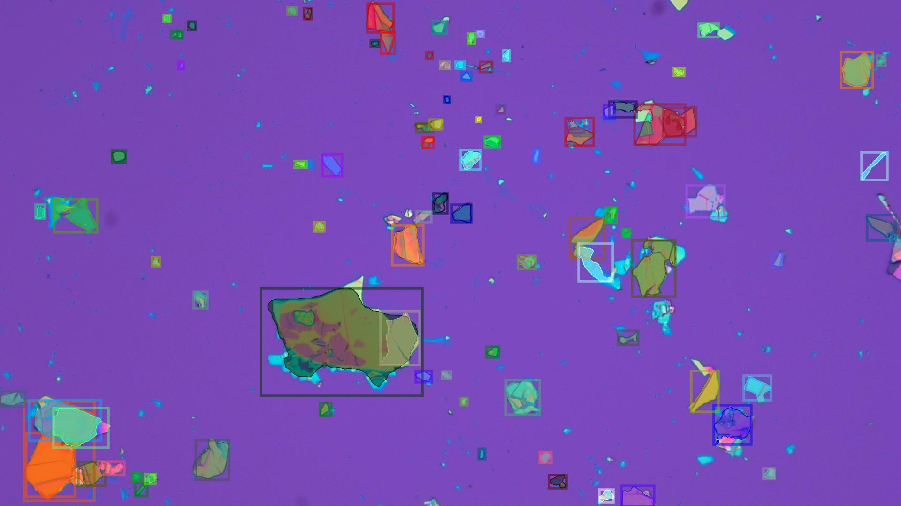
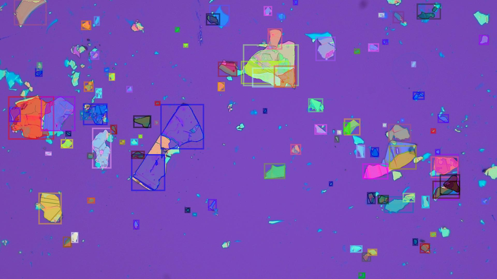
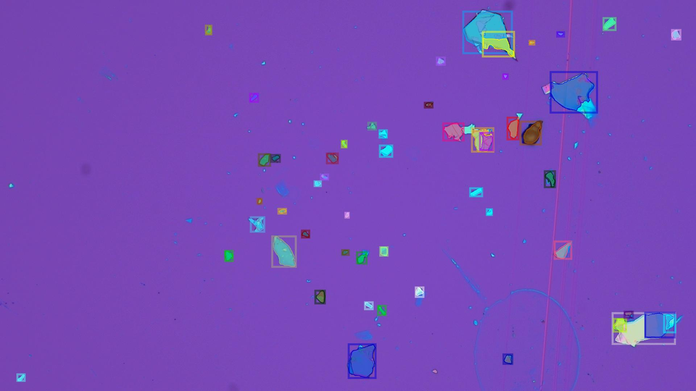

Our overarching mission is to accelerate two-dimensional materials research for quantum technologies in the US.
In quantum machine field, detecting two-dimensional (2D) materials in Silicon chips is one of the most critical problems. It is considered as one of bottlenecks in quantum research because of time and labor consumptions spent on finding a potential flake that might be useful. This progress takes hours to finish without any warranty that detected flakes being helpful. In order to speedup, reduce cost and efforts of this progress, we leverage computer vision and AI to build an end-to-end system for automatically identifying potential flakes and exploring their charactersitics (e.g thickness).
We provide a flexible and generalized solution for 2D quantum crystals identification running on
realtime with high accuracy. The algorithm
is able to work with any kind of flakes (e.g hBN, Graphine, etc),
hardware and environmental settings. It will help to reduces time and labor consumption in research of
quantum technologies.



@article{Nguyen2022TwoDimensionalQM,
title={Two-Dimensional Quantum Material Identification via Self-Attention and Soft-labeling in Deep Learning},
author={Xuan-Bac Nguyen and Apoorva Bisht and Hugh Churchill and Khoa Luu},
journal={ArXiv},
year={2022},
volume={abs/2205.15948}
}
@article{dendukuri2019defining,
title={Defining quantum neural networks via quantum time evolution},
author={Dendukuri, Aditya and Keeling, Blake and Fereidouni, Arash and Burbridge, Joshua and Luu, Khoa and Churchill,
Hugh},
journal={arXiv preprint arXiv:1905.10912},
year={2019}
}